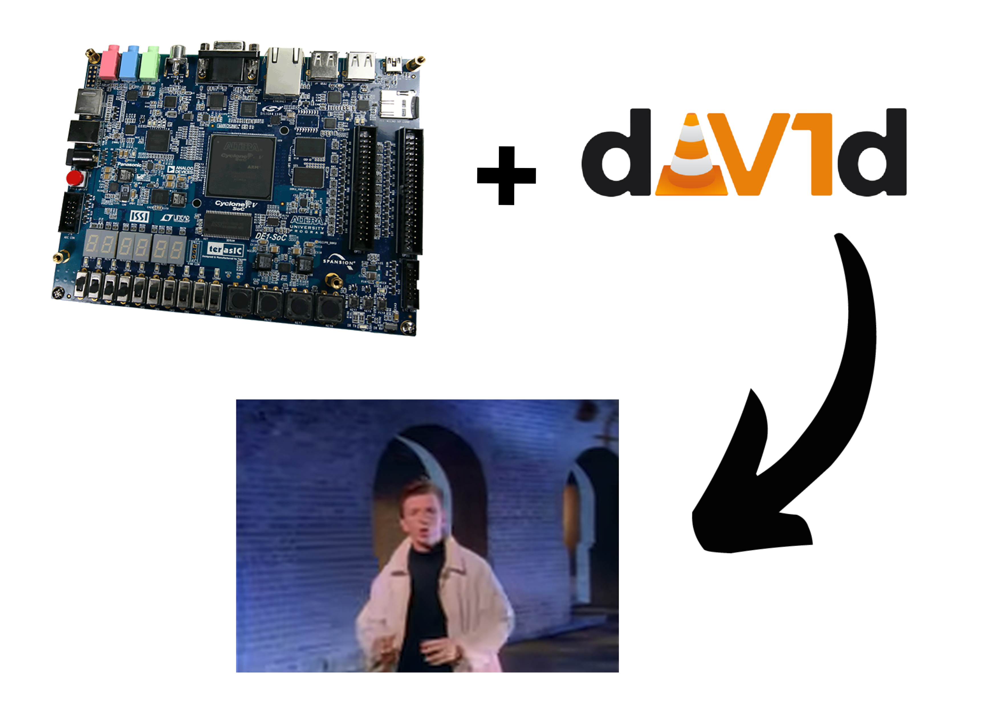
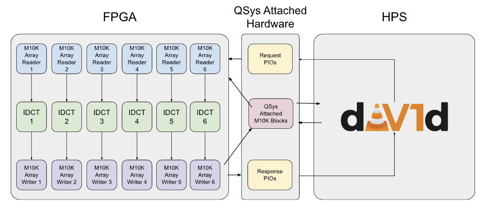
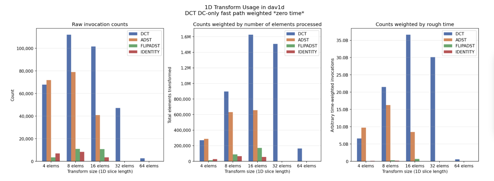
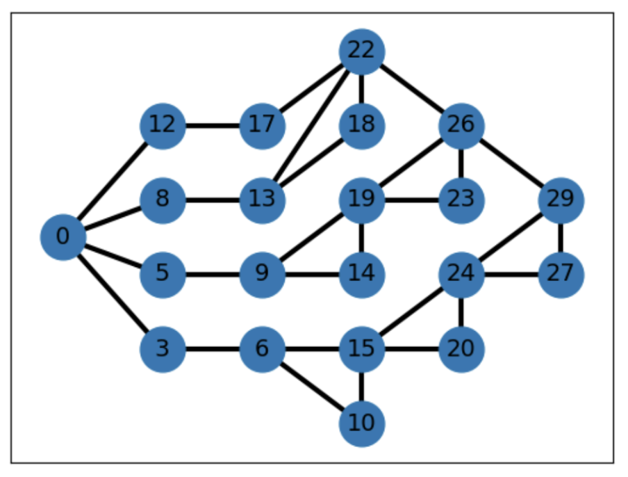
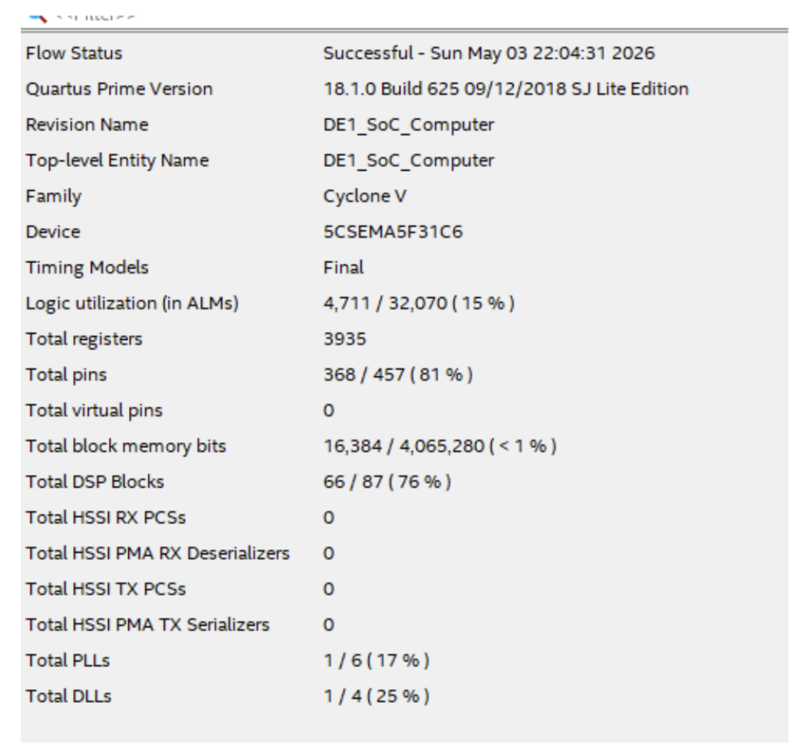
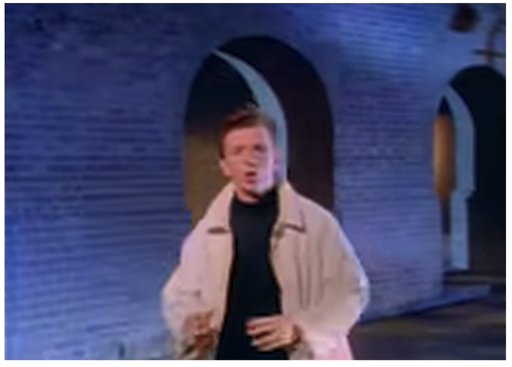

ECE 5760 - Hardware Acceleration via FPGA final project.
We integrated custom FPGA
inverse discrete-cosine-transform (DCT) blocks with the open-source dav1d AV1 decoder running on the DE1-SoC HPS.
Note: We did not manage to achieve performance gains over dav1d's optimized C and ARM assembly paths, but the project was a useful learning experience.

High-level split between dav1d on the HPS and transform compute on the FPGA.
Accelerating the entirety of the AV1 decode process purely in hardware is fundamentally impossible on our target De1-SoC FPGA due to the amount of logic and memory resources required, despite the FPGA being relatively powerful for a college course. Therefore, our goal was not to complete the entire video decoding process in hardware, but to accelerate some of the key transformations that would otherwise be done in software.

Profiling showed DCT transforms dominated 1D transformation workload.
To identify the ideal candidate for hardware acceleration, we profiled the dav1d software decoder to analyze 1D Transform usage on a sample video.
We chose the inverse DCT transformation because our profiling showed that it was the most expensive part of dav1d's decode pipeline, and because it is heavily math based, there was a lot of potential for parallelism.

Dependency graph used to combine valid optimized IDCT steps.
My main contribution was the inverse DCT implementation and helper-function package. I translated the AV1 specification's transform steps into SystemVerilog.
The first IDCT implementation was a direct state-machine implementation of the spec, which was useful for getting correctness but wildly expensive: a single naive 32-wide block used 66 DSPs. Later we wrote an optimized version wrapped the butterfly operation in reusable modules and muxed inputs through only two butterfly units, bringing usage down to four DSPs per block.
Because the target block was 32x32, I could remove AV1 steps that only apply to 64-wide transforms. We also used a step dependency graph to combine safe Hadamard and butterfly operations while preserving the bit-exact ordering required by the decoder.

The naive IDCT used 66 DSPs for one block.
The DCT was useful because hardware can apply many register-level operations in parallel, but dav1d's assembly is extremely optimized and the HPS/FPGA transfer path is slow. So in the end, moving data to the accelerator cost more than the saved compute.
We also hit FPGA resource limits hard. Only six transform blocks fit, mostly due to register and LUT pressure.

A frame from Rick Astley's "Never Gonna Give You Up" decoded by our accelerated version of dav1d.
For our test case we ran Rick Astley's "Never Gonna Give You Up" through our FPGA-assisted dav1d build. Due to the limited storage available on our SD card, we had to downscale the video to 256x144 — larger versions simply would not fit on the SD card once decoded into raw video.
The decoder produced correct, watchable frames, confirming that the inverse DCT co-processor was integrated end-to-end with the software decode path.
Diff between CPU and FPGA-assisted decode. The grey shows that there are no differences.
To make sure we were getting it right, we compared our FPGA-assisted output against software-only dav1d's output frame by frame. The diff image is almost entirely uniform grey, which means there are no differences between the two decodes, our hardware IDCT was bit-exact with the reference.
A small white speck in the diff revealed a bug in dav1d's ARM assembly path.
While testing the identity transform, we noticed a small white speck in the diff, indicating a real difference between the two outputs. After digging in, we determined that the ARM assembly version of dav1d had a bug, not in the transform logic itself, but somewhere higher up the pipeline, that was causing the transform logic to receive different coefficients.